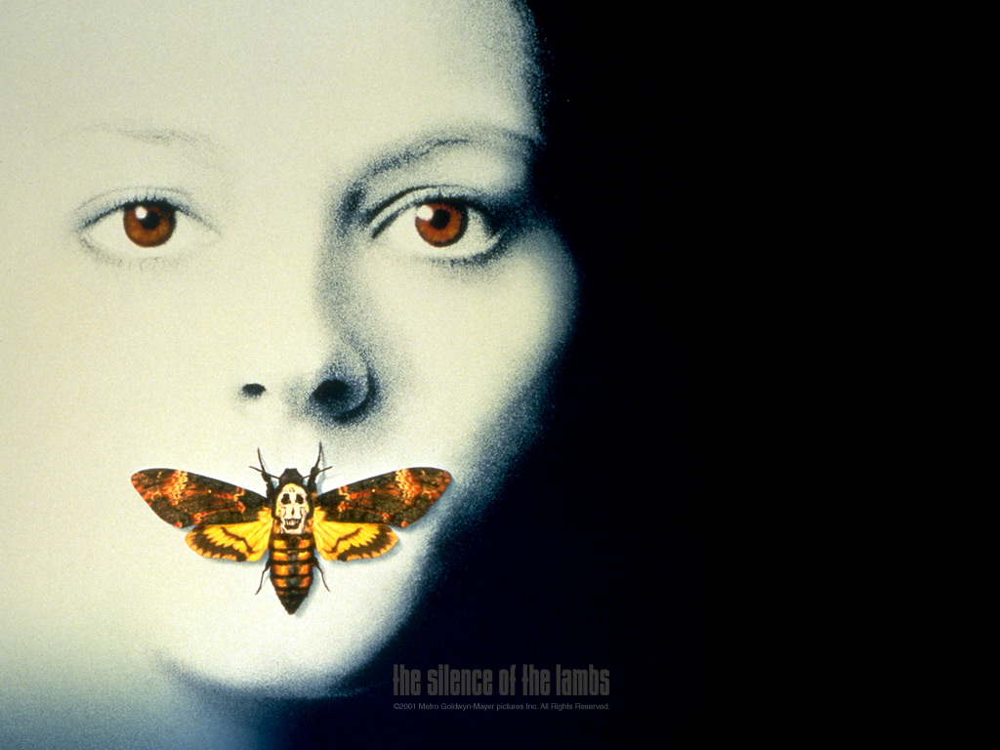
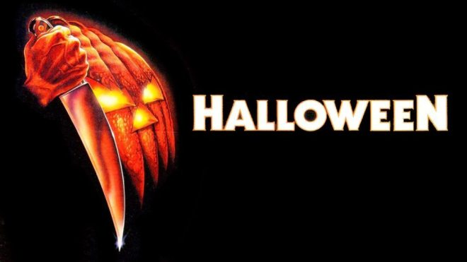
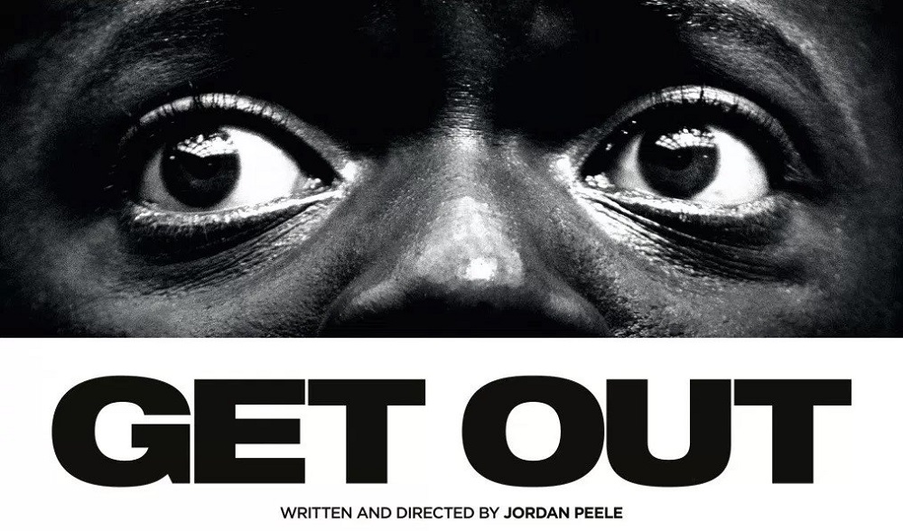

Halloween Project
It's October, and that's the perfect time to spend a few evenings with family and friends sitting together and enjoying some of the best horror movies. For those who love thrills, horror movies are always engaging, full of creativity, and bringing us to the spooky world. We can seek out and enjoy feelings of thrill, fear, and excitement because there is no real threat to us. Also, what's interesting is the fear of bringing people together.
Here is a list of our 3 favorite horror movies:
Adapted from the novel of the same name, the movie is about an attractive female protagonist, a young FBI trainee pulled out from her training to apprehend a serial killer who is known as "Buffalo Bill" and skins his female victims' corpses. I was completely conquered by the intelligence, courage and at the same time the sensitivity of the heroine. To arrest criminals, she must seek the advice of the imprisoned Dr. Hannibal Lecter, a brilliant psychiatrist and cannibalistic serial killer. This is a villain with a strange charm because of his intelligence and personality. The movie is frightening and involving from start to the end. It's a great movie to watch this Halloween.
The plot tells about a mental patient who was committed to a sanitarium for murdering his teenage sister on Halloween night when he was six years old. Fifteen years later, he escapes and returns to his hometown, where he stalks a female babysitter and her friends, while under pursuit by his psychiatrist. This is a cinematic masterpiece of horror movies.The movie creates tension throughout with virtually very little gore on screen and has earned its reputation as one of the most merciless and terrifying thrillers ever.
Get Out follows Chris Washington, a young African-American man who uncovers a disturbing secret when he meets the family of his white girlfriend. Claims to be a 'horror', but the movie shows the articulation of relevant social issues. This is an absolute masterpiece with amazing acting and filming. If you like a meaningful horror story, this is the best choice.
